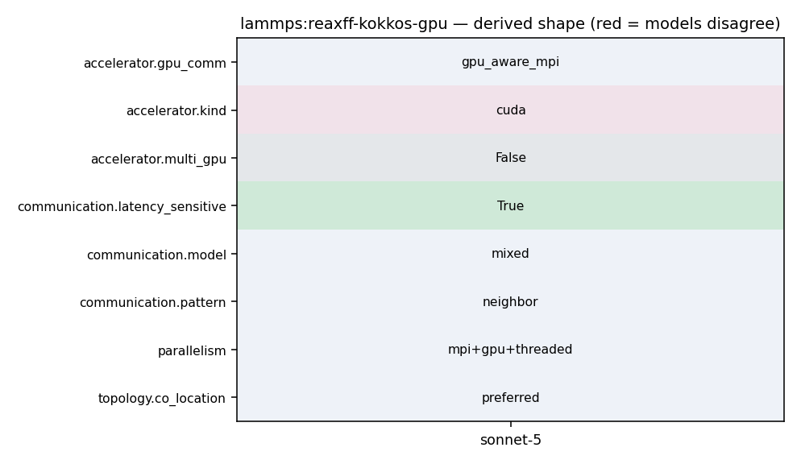

mpirun -np N lmp -k on g P -sf kk -pk kokkos -in in.reaxff.rdx
29 30 #include "atom_kokkos.h" 31 #include "atom_masks.h" 32 #include "comm.h" 33 #include "error.h" 34 #include "force.h" 35 #include "fix_acks2_reaxff_kokkos.h" 36 #include "kokkos.h" 37 #include "math_const.h" 38 #include "math_special.h" 39 #include "memory_kokkos.h" 40 #include "neigh_request.h" 41 #include "neighbor.h" 42 43 #include "reaxff_api.h" 44 #include "reaxff_defs.h"
13 ------------------------------------------------------------------------- */ 14 15 /* ---------------------------------------------------------------------- 16 Contributing authors: Ray Shan (SNL), Stan Moore (SNL), 17 Evan Weinberg (NVIDIA) 18 19 Nicholas Curtis (AMD), Leopold Grinberd (AMD), and Gina Sitaraman (AMD): 20 - Reduced math overhead: enabled specialized calls (e.g., cbrt for a 21 cube root instead of pow) and use power/exponential laws to reduce the 22 number of exponentials evaluated, etc.
13 14 #ifdef PAIR_CLASS 15 // clang-format off 16 PairStyle(reaxff/kk,PairReaxFFKokkos<LMPDeviceType>); 17 PairStyle(reaxff/kk/device,PairReaxFFKokkos<LMPDeviceType>); 18 PairStyle(reaxff/kk/host,PairReaxFFKokkos<LMPHostType>); 19 // clang-format on 20 #else 21
1048 my_sum += SQR(v[i]); 1049 } 1050 1051 MPI_Allreduce(&my_sum, &norm_sqr, 1, MPI_DOUBLE, MPI_SUM, world); 1052 1053 return sqrt(norm_sqr); 1054 }
771 772 pack_flag = 1; 773 sparse_matvec(&H, x, q); 774 comm->reverse_comm(this); //Coll_Vector(q); 775 776 vector_sum(r , 1., b, -1., q, nn); 777
1048 my_sum += SQR(v[i]); 1049 } 1050 1051 MPI_Allreduce(&my_sum, &norm_sqr, 1, MPI_DOUBLE, MPI_SUM, world); 1052 1053 return sqrt(norm_sqr); 1054 }
785 sig_new = parallel_dot(r, d, nn); 786 787 for (i = 1; i < imax && sqrt(sig_new) / b_norm > tolerance; ++i) { 788 comm->forward_comm(this); //Dist_vector(d); 789 sparse_matvec(&H, d, q); 790 comm->reverse_comm(this); //Coll_vector(q); 791 792 tmp = parallel_dot(d, q, nn); 793 alpha = sig_new / tmp;
11 See the README file in the top-level LAMMPS directory. 12 ------------------------------------------------------------------------- */ 13 14 #ifdef PAIR_CLASS 15 // clang-format off 16 PairStyle(reaxff/kk,PairReaxFFKokkos<LMPDeviceType>); 17 PairStyle(reaxff/kk/device,PairReaxFFKokkos<LMPDeviceType>); 18 PairStyle(reaxff/kk/host,PairReaxFFKokkos<LMPHostType>); 19 // clang-format on 20 #else 21 22 // clang-format off
12 See the README file in the top-level LAMMPS directory. 13 ------------------------------------------------------------------------- */ 14 15 /* ---------------------------------------------------------------------- 16 Contributing authors: Ray Shan (SNL), Stan Moore (SNL), 17 Evan Weinberg (NVIDIA) 18 19 Nicholas Curtis (AMD), Leopold Grinberd (AMD), and Gina Sitaraman (AMD): 20 - Reduced math overhead: enabled specialized calls (e.g., cbrt for a 21 cube root instead of pow) and use power/exponential laws to reduce the 22 number of exponentials evaluated, etc. 23 - Added blocking to the Torsion and (optionally) BuildLists kernels, to 24 reduce thread divergence on GPUs 25 - Added preview to BuildLists kernels along with full version 26 ------------------------------------------------------------------------- */ 27 28 #include "pair_reaxff_kokkos.h" 29
65 the printed equations and the reference implementation disagree, pair 66 style *reaxff* follows the reference implementation. 67 68 The *reaxff/kk* style is a Kokkos version of the ReaxFF potential that 69 is derived from the *reaxff* style. The Kokkos version can run on GPUs 70 and can also use OpenMP multithreading. For more information about the 71 Kokkos package, see :doc:`Packages details <Packages_details>` and 72 :doc:`Speed kokkos <Speed_kokkos>` doc pages. One important 73 consideration when using the *reaxff/kk* style is the choice of either 74 half or full neighbor lists. This setting can be changed using the 75 Kokkos :doc:`package <package>` command. 76 77 The *reaxff* style differs from the (obsolete) "pair_style reax" 78 command in the implementation details. The *reax* style was a